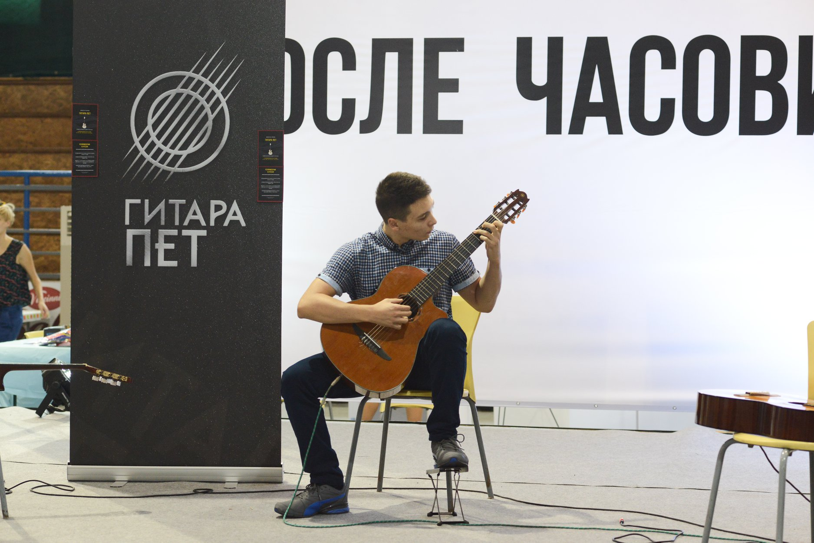
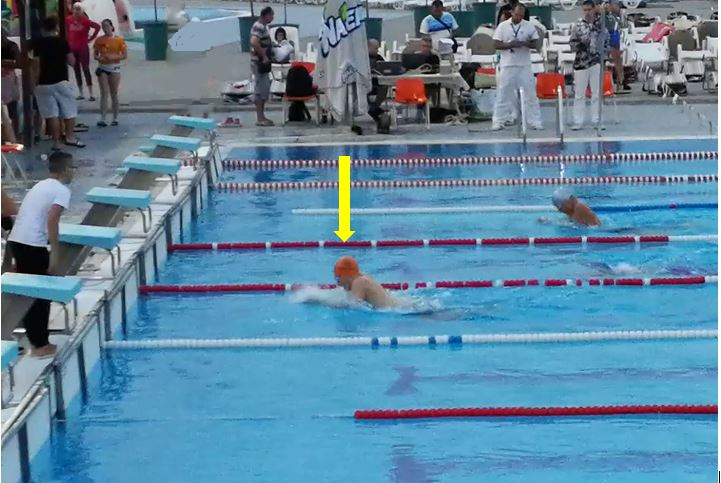

Гитара

Свирам гитара веќе пет години и во главно свирам класична музика, но и други жанрови како забавно, рок итн.
Во рамки на изведбите на класични композиции на гитара, сум настапувал на неколку различни сцени, и тоа:
- Музички настап во рамки на училишните претстави во Салон 19.19
- Гостување и изведба на две композиции во емисијата „Урбан-таг“ на ТВ21
- Изведба на две композиции на фестивалот „Underfest 2019“
Пливање

Со пливање се бавев професионално единаесет години, а сега пливам рекреативно со цел да го одржувам физичкото здравје.
Во текот на пливачката кариера, освоив 109 медали и дипломи на домашни и меѓународни натпревари (35 први, 50 втори и 24 трети места),
од кои најмногу (70) во дисциплините со градно пливање.
Единаесет пати бев првак на државни натпревари во дисциплини во поединечна конкуренција.